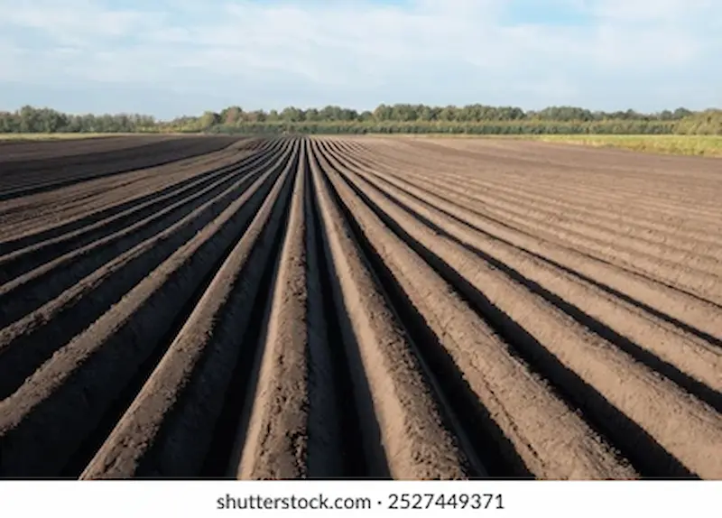
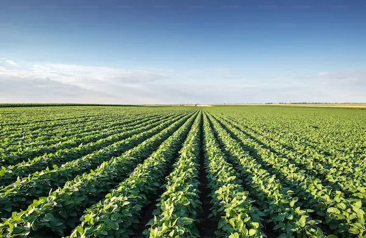

Soil Conservation Tillage
Minimizing mechanical disturbance preserves deep biological networks and structural moisture paths.

Crop Management in Zimbabwe
Minimizing mechanical disturbance preserves deep biological networks and structural moisture paths.

Alternating commercial grain production with dense legume row cycles naturally restores nutrient loads.
